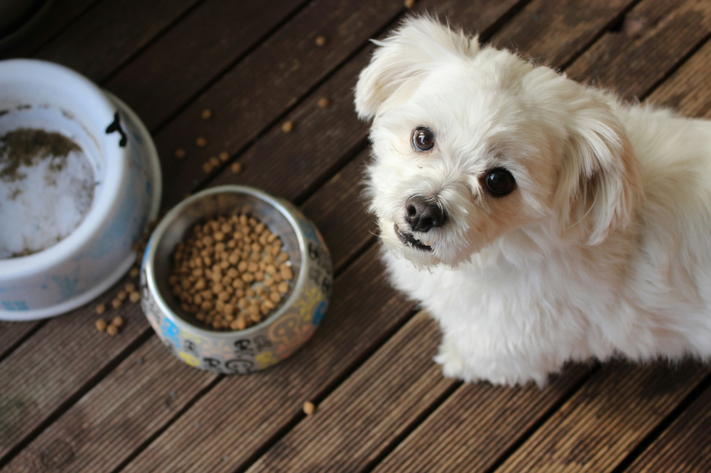
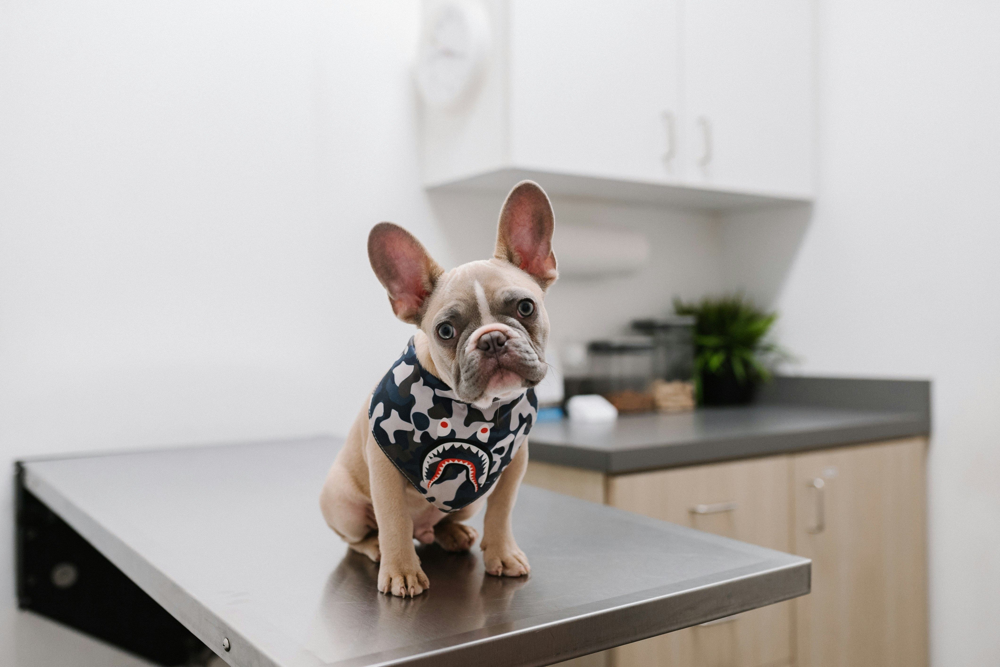
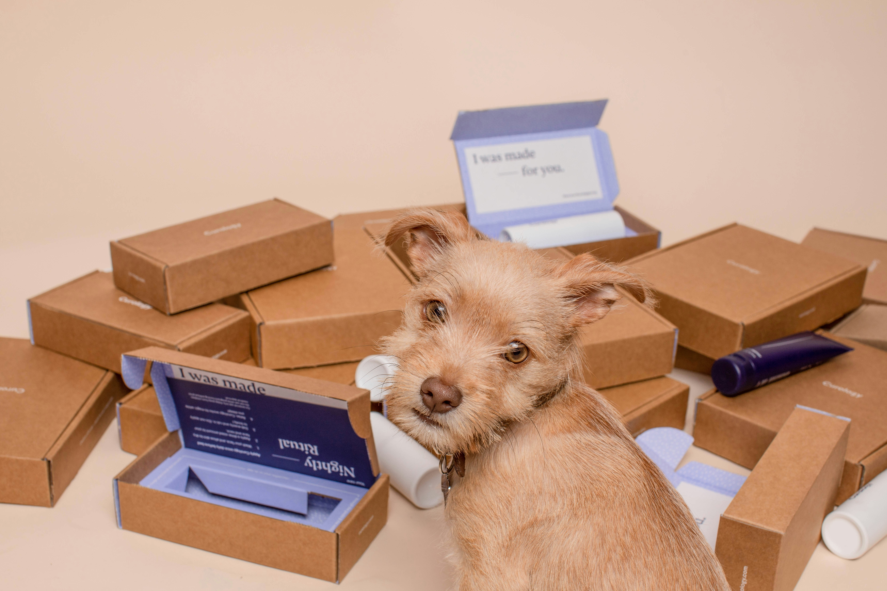
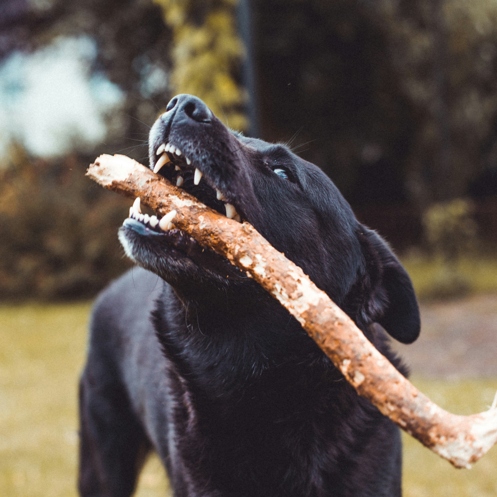

Sundhed hos hunde
Mad og drikke
Det er vigtigt at din hund får den rette mængde mad og drikke. En voksen hund skal have mad to gange om dagen, mens en hvalp skal have mad tre gange om dagen. Hvilken mad der passer bedst til din hund, er meget forskelligt. Derfor er det vigtigt at spørge dyrelægen eller en ernæringsekspert, om hvad du bør give din hun at spise.
Vaccination
Det er vigtigt at din hund bliver vaccineret. Vaccination beskytter din hund mod sygdomme, som den ellers ville kunne blive smittet med. Det er vigtigt at din hund bliver vaccineret, da det kan være livstruende for din hund at blive smittet med nogle af de sygdomme, som den kan blive vaccineret imod. Din hund kan blive vaccineret hos dyrelægen
Ormekur
Det er vigtigt at din hund får ormekur regelmæssigt. Ormekur hjælper med at forebygge og behandle ormeproblemer hos hunde. Det anbefales at give din hund ormekur hver 3. måned for at sikre dens sundhed og velvære.
Tandpleje
Det er vigtigt at din hund får ordentlig tandpleje. Hunde kan også få tandproblemer, og det er vigtigt at holde øje med din hunds tænder. Hvis din hund har tandproblemer, kan det være nødvendigt at få den til dyrelægen for at få behandlet dens tænder.
Sygdom

Det er vigtigt at holde øje med din hund, og være opmærksom på om den virker syg. Hvis din hund virker syg, er det vigtigt at tage den til dyrelægen, så den kan blive undersøgt og behandlet. På Fødevarestyrelsen Kan du se en række af de hyppigste sygdomme hos hvalpe.